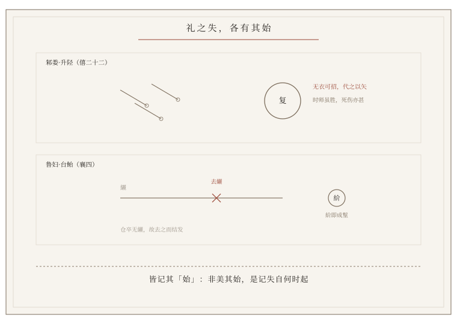

檀弓上 · 三·十九 · 第 222 课
邾娄复之以矢，盖自战于升陉始；鲁妇人之髽而吊也，自败于台鲐始。注「时师虽胜，死伤亦甚，无衣可以招魂」「去纚而紒曰髽」。
说什么事：两个坏例，各有一个开头。
落在哪一层：礼，兼及礼制与史。论失礼之始。
为何编在此位：上节论哀之序，此节论礼之失。序立而后失生，故此相继。
【经】邾婁復之以矢，蓋自戰於升陘始也。魯婦人之髽而弔也，自敗於臺駘始也。
【注】时师虽胜，死伤亦甚，无衣可以招魂。升陉，鲁地，僖二十二年秋。去纚而紒曰髽；礼，妇人吊服，大夫之妻锡衰，士之妻则疑衰与，皆吉笄无首素总。台当为壶，春秋传作狐鲐，襄四年秋。
【疏】此一节论二国失礼之事。「邾娄复之以矢」者，复是招魂之名，本用死者之上服；今邾人无衣可招，乃以矢招之，故云「自战于升陉始也」。案僖二十二年《左传》「邾人以须句故出师，公卑邾，不设备而御之。臧文仲曰：国无小，不可易也。蜂虿有毒，而况国乎。公不听，及邾师战于升陉，我师败绩，邾人获公胄，县诸鱼门」，是邾人胜而死者亦多，故无衣可复。「矢是心之所好，故用所好招魂」，此亦一说。「鲁妇人之髽而吊」者，髽是丧髻，本于亲丧乃为之；今闻战败而往吊于国中，无纚可束，故去纚而紒，即成髽也。案襄四年《左传》「邾人、莒人伐鄫，臧纥救鄫，侵邾，败于狐鲐。国人诵之曰：臧之狐裘，败我于狐鲐；我君小子，朱儒是使」，是其事也。注「去纚而紒曰髽」：《士冠礼》「纚，广终幅，长六尺」；《大戴礼》「吉笄无首素总」，是妇人常时以纚束发、以笄固之、以总垂饰；今仓卒无纚，故去之而紒。《丧服传》「大夫吊于命妇，锡衰」，郑注《司服》「锡衰、緦衰、疑衰凡三等」，郑注《文王世子》「同姓士用緦衰，异姓士用疑衰」。《丧服传》「总六升，长六寸」，是斩衰之总；此云素总，盖齐衰之总八寸。
复 注「复是招魂之名」。人初死，升屋呼其名以招魂。
上服 死者生前所服之礼服，招魂用之。
髽 注「去纚而紒曰髽」。丧髻。
纚 束发之帛，广终幅长六尺。
紒 结发。
锡衰·疑衰 妇人吊服之等。
台鲐 注「台当为壶，《春秋传》作狐鲐」。
邾娄人用矢招魂，大概从升陉之战开始。鲁国妇人梳着丧髻去吊人，从台鲐之败开始。
此节只两句，句法相同：某事，自某战始。所记皆非善事。升陉之胜而伤亡重，无衣可招，遂以矢；台鲐之败而死者众，妇人仓卒赴吊，无纚可束，遂成髽。两个「始」，都不是礼之正，而是礼之穷——到了没有办法的时候，人就这样做了，而后遂为常。
第一层 复以衣不以矢 复者，以死者生前之上服升屋而呼。衣者，其人之所在也。矢者，战之所用。以矢招魂，是以战具代其衣——疏解一句「矢是心之所好，故用所好招魂」，说得委婉，其实是说：那几年邾人的心全在矢上。
第二层 无衣可复 注「时师虽胜，死伤亦甚，无衣可以招魂」。胜而伤亡如此，则《左传》「蜂虿有毒」之诫，正为此发。一个「无」字，比任何议论都重。
第三层 髽非凶服之常 髽本为亲丧之髻。今妇人往吊国中战死之人，仓卒无纚，去纚而紒，遂成髽。注辨妇人吊服本有锡衰、疑衰之等，吉笄无首素总；今一切从简。此亦是「无」字逼出来的。
第四层 礼失之始 二事皆记「始」。「始」者，非美其始，是记其失自何时起。礼之坏，很少一次崩坏，多是这样一次应急之后，成了惯例。
与今日何干 凡见一种不合规矩的做法流行，先问它从哪一场变故开始。多数失礼，起于一次不得已。
| 左 | 右 |
|---|---|
| 邾娄复之以矢 | 复本用上服，今以矢 |
| 自战于升陉始 | 僖二十二年，邾胜而伤亡重 |
| 无衣可以招魂 | 师虽胜，死伤亦甚 |
| 鲁妇人之髽而吊 | 髽本亲丧之髻 |
| 自败于台鲐始 | 襄四年，鲁败于狐鲐 |
| 去纚而紒曰髽 | 仓卒无纚，故去之而结发 |
| 妇人吊服本有等 | 锡衰、疑衰，吉笄无首素总 |
| 两个「始」 | 非美其始，记失自何时起 |
画两处并置的城邑外景，上下分幅。上幅：一座城门外的野地，地面散着十余支断矢与几件破衣，远处屋脊上升起一缕极淡的烟；近处一名妇人（素衣、发束成髻、无饰）立在门侧，脚下无一物。下幅：同一城门，门内一片狼藉的车辙与折断的旗杆，几名妇人（素衣、发皆结成髻、手持素帛）在门内一字站开，等候着什么。上下幅之间以一道浅色横线相隔。不写文字、不画兵刃与人面细节。赭色只用在上幅那缕烟与下幅旗杆的一截。
